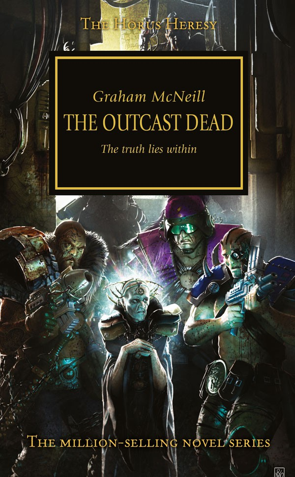

THE OUTCAST DEAD

Author: Graham McNeill
Format: Novel
Astropath Kai Zulane learns a secret that could change the war and is forced to flee through Terra's underworld with a band of renegades. He must decide who to trust before the people pursuing him catch up.
Introduction reviewed against Black Library’s description on 2026-09-27. The publisher page may contain spoilers.
Publication facts: publisher source, checked 2026-09-26.
Open this work in the interactive Archive to track reading progress and explore related works.